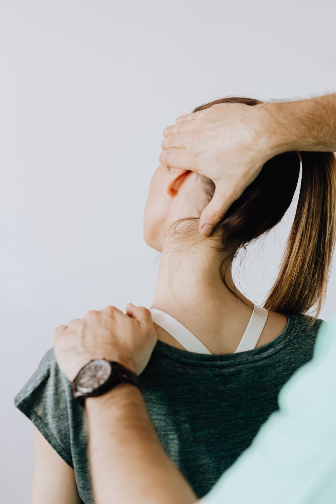

Ese paseo. Ese entrenamiento. Ese abrazo. Hay mucho más
detrás de cada movimiento.

01 / UN CUIDADO QUE ESCUCHA
VOLVER A LO TUYO. ↗EN BUENAS MANOS.
SOMOS MYFISIO. ESTAMOS CERCA.
Tu historia nos mueve.
Somos una clínica de fisioterapia y rehabilitación en Grecia. Un
espacio para bajar el ritmo, escucharte y entender qué necesitás
para seguir adelante.
Trabajamos con atención personalizada y un enfoque humano. Porque
tu cuerpo no es igual a ningún otro. Y tu proceso tampoco.
Atención con técnicas de terapia manual adaptadas a tu
valoración y a las necesidades de tu cuerpo. Un momento para
entender tus molestias y cuidar de vos.
Escribinos por WhatsApp, contanos qué necesitás y coordinemos
tu valoración según la disponibilidad.
02
Queremos escucharte.
En tu visita conocemos tu historia, valoramos tu movimiento y
conversamos sobre tus objetivos.
03
Hagamos un plan.
Definimos tu abordaje y te acompañamos durante el proceso. Un
paso a la vez, a tu ritmo.
¿Qué llevo a mi primera cita? +
Ropa cómoda que te permita moverte. Si tenés estudios o informes
relacionados con tu consulta, podés llevarlos. Escribinos si
necesitás alguna indicación adicional.
¿Cuántas sesiones necesito? +
Depende de tu valoración, tus objetivos y tu evolución. En tu
consulta podemos conversar sobre el abordaje adecuado para vos.
¿Dónde se encuentra la clínica?
+
Estamos en Grecia, Alajuela, 300 metros norte de Mall Plaza
Grecia. Escribinos para confirmar las indicaciones de llegada
antes de tu visita.